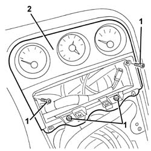

7040A25 central facia trim - r r
- Path
- Procedures > 70 FITTINGS > 7040 BODYSHELL INTERIOR TRIMS AND FITTINGS > 7040A passenger compartment trim > 7040A25 central facia trim - r r
- Kind
- repair procedure (removal / refitting; the operation number is the code)
- Applies to
- all engines; all production periods
- Interactive page
- https://sloeber94.github.io/elrnDB-a156/en/#/3238792
Applies to: all engines; production: da 03/02 a 09/03, da 10/03
 Removing
Removing
 Refitting
Refitting7040A65 passenger compartment box lock , one , r r
7040L37 gear lever plate - r r
5040D18 air conditioner control unit - r r
1. Unscrew the bolts
2. Remove the central trim.

Applies to: all engines; production: da 03/02 a 09/03, da 10/03
Refitting
RemovingCheck that the trim is undamaged.
Place the trim in position and secure it using the bolts.
5040D18 air conditioner control unit - r r
Topics linked from this page (6)
- 5040D18 air conditioner control unit - r r
- 5570T80 car radio unit - r+r
- 7040A65 passenger compartment box lock , one , r r
- 7040L20 tunnel trim - r r
- 7040L37 gear lever plate - r r
- 7065C42 ashtray (one) r+r
Topics that link to this page (14)
- 5010C24 upper air outlet on facia - r r
- 5020L10 additional heater system boiler - r r
- 5040B30 expansion valve (tube orifice) - r+r
- 5040C10 air conditioner box - r+r
- 5040C50 air conditioner heater radiator - r+r
- 5040D52 air inlet and recirculation flap actuator - r r
- 5040D76 air contitioner distribution flap control motor - r r
- 5040D84 air conditioner left hand air mixer flap control motor - r r
- 5040D86 air conditioner right hand air mixer flap control motor - r r
- 5040D90 air conditioner system wiring bundle - r r
- 5560C51 combined analogue control panel - r+r or replace
- 5560C64 electronic unit(infocentre) - replace after checking operation with special equipment
- 7040A10 instrument facia trim - r+r
- 7040A97 facia trim support beam - r r